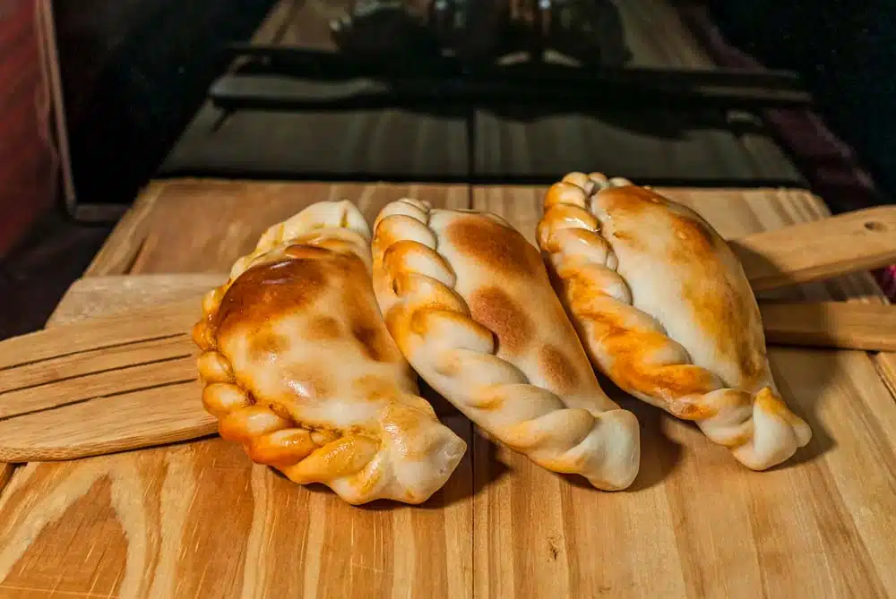

Empanadas salteñas caseras
Ingredientes
- 12 tapas de empanada para horno
- 500 g de carne picada o cortada a cuchillo
- 2 cebollas grandes
- 1 papa hervida en cubitos
- 1 cucharada de pimentón
- 1 cucharadita de comino
- Sal, pimienta y ají molido a gusto
- Huevos duros (opcional)
Preparación
- Rehogar la cebolla picada en una sartén con un poco de aceite hasta que esté transparente.
- Agregar la carne y cocinar hasta que cambie de color. Incorporar las especias.
- Añadir la papa en cubitos y mezclar bien. Dejar enfriar el relleno.
- Rellenar las tapas de empanada, agregar un trocito de huevo duro si se desea, y cerrar haciendo el repulgue clásico.
- Llevar al horno precalentado (200°C) durante 20-25 minutos o hasta que estén doradas.
üß° Consejo Paulinesco: prepará el relleno el d√≠a anterior para que tome más sabor. Y no te olvides de acompa√±arlas con una salsa criolla bien picante.